韓国 2016年2月17日アップデート
※韓国公式と韓国人プレイヤーから頂いた情報を基にしています。誤訳や韓国独自仕様の可能性もありますので、予めご了承下さい。2016年2月17日 韓国アップデートの変更内容一覧
出席チェックの常時開催
秘密ダンジョン通行用ポータルクリスタルの販売
アイテム保護機能
装備保護注文書
新課金アイテム「澄んだクレストボックス」「特級成長の秘薬」追加
「神秘の箱」「マファスの箱」改善
「光奏師」「リトルウィッチ」のPVP用新武器実装
不具合修正
冬休みラストスパートイベント
新アイテム
出席チェックの常時開催
今までイベント時にのみ行われていた出席チェックが、常時受けられるようになりました。
ログインすると、まず以下の出席チェック画面が表示され、1日1個ずつアイテムを受け取ることができます。
（キャラクター別ではなくID毎に1日1回のみ）
20日目まで達成すると、また1日目から繰り返すことができます。
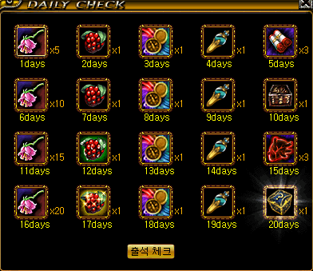
| 出席日数 | 獲得アイテム | 詳細 |
|---|---|---|
| 1日目 | ミュータントフラワー5個 | HP回復 80ポイント CP充填 80ポイント |
| 2日目 | サンベリー | 狩りでの獲得経験値 60分間 110％ 増加 |
| 3日目 | トレジャーハンターの羅針盤? | 15分間ユニークアイテムドロップ率10％増加 |
| 4日目 | 協会支援ポーション? | 30分間支援バフがかかる |
| 5日目 | 完全復活巻物3個 | 死亡ペナルティー時間を90％減少して、30秒の間、最大HPを200％にする。 |
| 6日目 | ミュータントフラワー10個 | HP回復 80ポイント CP充填 80ポイント |
| 7日目 | サンベリー | 狩りでの獲得経験値 60分間 110％ 増加 |
| 8日目 | トレジャーハンターの羅針盤? | 20分間ユニークアイテムドロップ率10％増加 |
| 9日目 | 協会支援ポーション? | 40分間支援バフがかかる |
| 10日目 | サナの材料箱 | 神秘の石のかけら、タティリス遺跡のかけら、修復済みタティリス遺跡の出土品などが出現 |
| 11日目 | ミュータントフラワー15個 | HP回復 80ポイント CP充填 80ポイント |
| 12日目 | 新鮮なサンベリー | 狩りでの獲得経験値 70分間 110％ 増加 |
| 13日目 | トレジャーハンターの羅針盤? | 25分間ユニークアイテムドロップ率10％増加 |
| 14日目 | 協会支援ポーション? | 50分間支援バフがかかる |
| 15日目 | 爆竜の心臓3個 | 10分の間、CPがいつも最高に維持される。 |
| 16日目 | ミュータントフラワー20個 | HP回復 80ポイント CP充填 80ポイント |
| 17日目 | 熟したサンベリー | 狩りでの獲得経験値 70分間 140％ 増加 |
| 18日目 | トレジャーハンターの羅針盤? | 30分間ユニークアイテムドロップ率10％増加 |
| 19日目 | 協会支援ポーション? | 60分間支援バフがかかる |
| 20日目 | 謎の箱 | 新鮮なファインベリー、真髄の茶菓壺、テ・マヌエル・ロッカーなどが出現 |
| 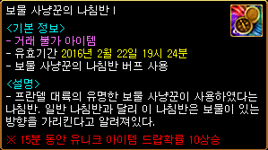 |
トレジャーハンターの羅針盤? 有効期限3日 ※15分間ユニークアイテムドロップ率10％増加 |
| 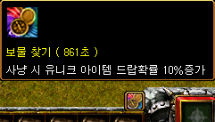 |
使用すると画面右下にアイコンが表示され、 カウントダウンが始まります。 |
 |
謎の箱 テ・マヌエル・ロッカー（天上界報酬） バルラレル・ロッカー（地下界報酬）、 バイル・ロッカー（赤い悪魔報酬）、 新鮮なファインベリー（狩りでの獲得経験値60分間150％増加）、 真髄の茶菓壺（ミニペットの餌）などが出現 |
秘密ダンジョン通行用ポータルクリスタルの販売
| 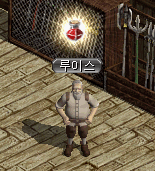 |
冒険家協会バーのルイス（37.24）にて、 |
| 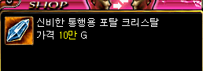 |
新秘密ダンジョン通行用ポータルクリスタルを 10万Gで購入することができます。 |
| 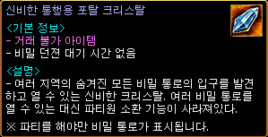 | 全ての秘密ダンジョン共通で使用可能。 ただし、パーティーを組まないと秘密ダンジョンの 入口は表示されず、入ることはできません。 召還機能なし 取引不可・重ね置き不可 複数所持は可能 |
アイテム保護機能
| 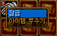 |
アイテムを右クリックして「保護」を選択すると、 |
| 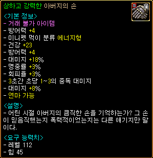 |
鍵マークが付き、保護されたアイテムとなります。 ノーマル、ユニーク、セットアイテムなど全ての装備アイテムが保護可能。 保護されたアイテムは売却不可・破壊不可・強化不可。 |
| 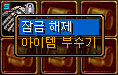 | 右クリックして「保護解除」を選択すれば、 元のアイテムに戻ります。 何度でも「保護」⇔「保護解除」の変更が可能。 |
装備保護注文書
| 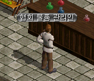 |
冒険家協会ブルンネンシュティグ本部の 協会物資管理人（52.26）にて、 |
 |
装備保護注文書を100万Gで 購入することができます。 |
| 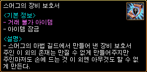 |
装備保護注文書を |
| 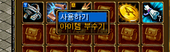 |
右クリックして「使用する」を選択し、 |
| 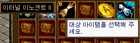 |
保護したいアイテムをクリックすると |
| 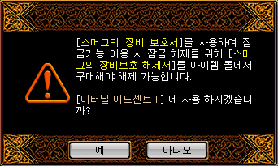 |
確認画面が表示され、 |
 |
鍵マークが付き、完全保護されたアイテムとなります。 完全保護されたアイテムは売却不可・破壊不可・強化不可・保護解除不可。 完全な保護を解除するには、別途 課金アイテム装備保護解除注文書（未実装）が必要となります。 |
新課金アイテム「澄んだクレストボックス」「特級成長の秘薬」追加
| 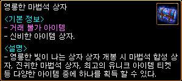 |
澄んだクレストボックス （1500ウォン） 出現アイテム ・クレスト合成ボックス ・珍しいクレストボックス ・最高のユニークアイテムチケット ・ユニークアイテムチケット ・ソルの叫び ・ファーストヒールポーション ・パーティー完全復活巻物 ・運命の香水 ・風の羽 ・ランディスの手製菓子 |
| 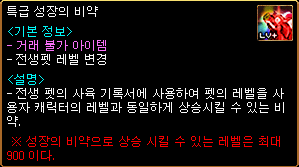 | 特級成長の秘薬 （ 3500ウォン） 転生ペットの飼育記録書に使用する事で、ペットのレベルを使用者と同じレベルまで上昇させることができます。最大900レベルまで。 |
「神秘の箱」「マファスの箱」改善
韓国でのロトボックスに相当する「神秘の箱」「マファスの箱」がリニューアルしました。
既存の「神秘の箱」「マファスの箱」は、「旧神秘の箱」「旧マファスの箱」に変更となります。
| 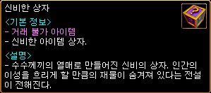 |
神秘の箱 （1000ウォン） 出現アイテム ・神秘のふいご[S] ・熱い風のふいご[S] ・冷たい風のふいご[S] ・天上の鉄床 ・魔法のボンド ・奇跡のユニークアイテムチケット ・ソルの叫び ・ファーストヒールポーション ・パーティー完全復活巻物 ・運命の香水 ・風の羽 ・ランディスの手製菓子 |
| 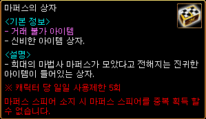 |
マファスの箱 （800ウォン） 出現アイテム ・究極のユニークアイテムチケット ・マファスベリー ・真髄の茶菓壺 ・ソルの叫び ・ファーストヒールポーション ・パーティー完全復活巻物 ・マファススフィア ・不思議な紺碧の壺 |
| 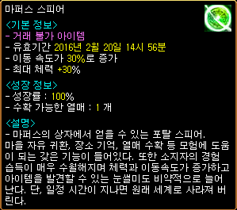 |
マファススフィア 有効期間3日 移動速度 30％ 増加 最大HP +30％ <成長情報> 成長率 : 100％ 収穫可能な果実 : 1 本 |
| 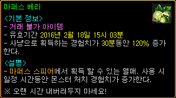 | マファスベリー 狩りでの獲得経験値 30分間 120％ 増加 マファススフィアの花が咲くと収穫できる不思議な果実。 |
「光奏師」「リトルウィッチ」のPVP用新武器実装
「光奏師」知識用＆物理用の2種と「リトルウィッチ」のPVP用新武器が実装されました。
| インテリジェンスバイブル[Nx] | ブレイブコード[Nx] |
|---|---|
| <基本情報> 攻撃力 5~10 (1.00秒) 射程距離 350 スキルレベル +8 攻撃速度 +35％ CP獲得ボーナス 35％ 魔法攻撃力を35％強化させる。 ターゲットの光抵抗を25％弱化させる。 <錬成 オプション 情報> アイテム着用レベル -110 魔法致命打 10％ 最終ダメージ +10％ 魔法致命打 10％ <要求能力値> レベル 521 知識 300 <着用可能な職業> ネクロマンサー 光奏師 |
<基本情報> 攻撃力 95~110 (1.20秒) 射程距離 550 決定打 +1％ ダメージ +220％ 攻撃速度 +25％ 敏捷 +180 光ダメージ 120〜180 5秒の間 命中, 回避低下 闇ダメージ 66〜66 呪い 5秒 人間型キャラクターに追加で150％のダメージを与える。 <錬成 オプション 情報> アイテム着用レベル -110 ダメージ +50％ 最終ダメージ +10％ ダブルクリティカルダメージ 10％ 増加 <要求能力値> レベル 631 力 176 敏捷 250 <着用可能な職業> ネクロマンサー 光奏師 |
| 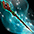 インテリジェンススティック[Nx] | |
| <基本情報> 攻撃力 5~10 (1.00秒) 射程距離 110 スキルレベル +8 移動速度 +40％ CP獲得ボーナス 10％ 最大CP +100％ 最大HP +30％ <錬成 オプション 情報> アイテム着用レベル -110 健康 +100 運 +100 移動速度 +10％ <要求能力値> レベル 521 運 300 <着用可能な職業> リトルウィッチ ネクロマンサー |
不具合修正
・ミラーマップでHP吸収されなかった不具合修正。
・「引き裂かれた宝の地図」クエストの段階変更が進行しなかった不具合修正。
・復帰者パッケージ課金アイテムの説明文を追加。
冬休みラストスパートイベント
・GMのプレゼントボックスイベント 2月17日〜3月1日
22時〜0時に古都ブルンネンシュティグで、GMがプレゼントボックスを配ります。
・ゴールデンタイムイベント 2月19日〜2月21日、2月26日〜28日
金土日の週末21時〜23時に、経験値2倍のゴールデンタイムを実施します。
・公認ネットカフェ申請イベント
加盟店になっていないネットカフェを申請して公認加盟店になると、ギアカーペットツール30日版をプレゼントします。
新アイテム
出席チェック20日目の報酬「謎の箱」から、ごく稀に出現する新アイテム。
| テ・マヌエル・ロッカー | |
|---|---|
| <基本情報> - 不思議なアイテムボックス <説明> - 天上界の天使テマヌエルが赤い宝石を持って来る冒険家に与える報酬を込めておいた箱。箱を開けると天上界の赤い宝石補償のいずれかを得ることができる。 |
|
天上報酬をランダムでもらえるようです。地下界・赤い悪魔用もそれぞれあります。
これでもう天上通い、地下通いする必要もなくなりますね…。